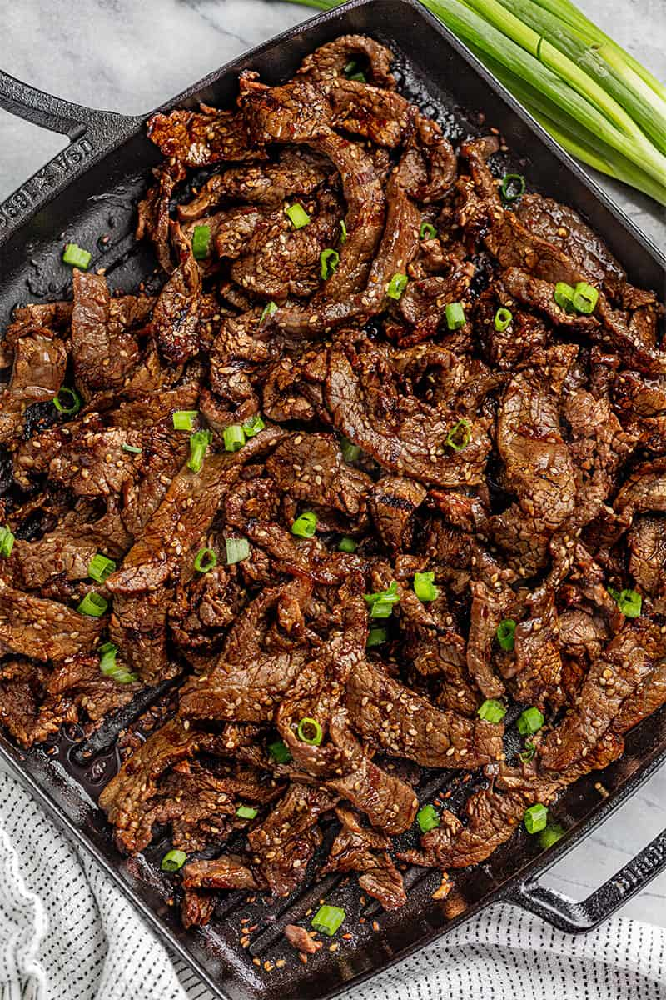

Beef Bulgogi
Enjoy this bulgogi with rice for a delicious meal!

Description
Even better if rolled up in red leaf lettuce with rice and hot pepper paste. If you want to spice it up just add red pepper powder to your marinade.
Ingredients
- 1 pound flank steak, thinly sliced
- 5 tablespoons soy sauce
- 2 1/2 tablespoons white sugar
- 1/4 cup chopped green onion
- 2 tablespoons minced garlic
- 2 tablespoons sesame seeds
- 2 tablespoons sesame oil
- 1/2 teaspoon ground black pepper
Steps
- Place the beef in a shallow dish. Combine soy sauce, sugar, green onion, garlic, sesame seeds, sesame oil, and ground black pepper in a small bowl. Pour over beef. Cover and refrigerate for at least 1 hour or overnight.
- Preheat an outdoor grill for high heat, and lightly oil the grate.
- Quickly grill beef on hot grill until slightly charred and cooked through, 1 to 2 minutes per side.
Homepage